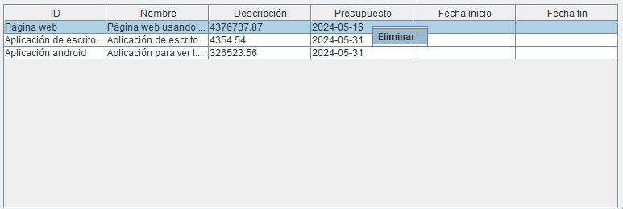

Eliminar proyecto
NOTA: ELIMINAR UN PROYECTO ELIMINARÁ LAS ASIGNACIONES TODAS LAS RELACIONES QUE TENGAN RELACIÓN CON EL PROYECTO SELECCIONADO.
En la ventana de eliminar proyecto encontrarás una tabla, que al darle click derecho encima de un proyecto saldrá la opción de eliminar como en la siguiente imagen:

Si le das click a eliminar, eliminará al trabajador.
Las columnas se pueden ordenar a gusto poniendo el cursor del ratón encima de el nombre de una de estas haciendo click y arrastrando hacia la derecha o la izquierda.